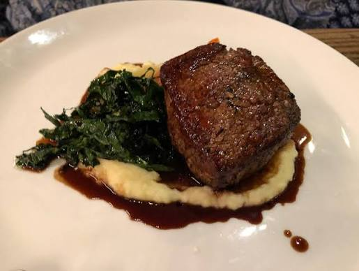

Filet Mignon: the Reverse Sear Easy-Mode

Never stress about making the perfect steak again.
This is a foolproof method to make an amazing steak. It works just fine with a thick ribeye as well. Regardless of the cut (I recommend a filet or a ribeye) it needs to be at least 1.5" thick. 2" is better.
Ingredients
- Steak: a filet (or ribeye) 2" thick or better
- 4 cloves garlic
- butter
- coarse salt
- pepper
- thyme
Steps
- Dry the steak with paper towels.
- Season on all sides generously with coarse salt. Be aggressive here.
- Let the salted steak sit in the fridge, uncovered, on a rack for at least 6 hrs. Overnight is better.
- Place the steak in the cold oven. Start the oven at set the temp for 225o f (250 is fine, too).
- When the steak reaches around 115o f, pull it out and set it aside.
- Crank up a heavy frying pan. Stainless steel is great, cast iron is great, cheap non-stick is the worst.
- When it's ripping hot, add some avocado oil and sear that thing. Let it sit still for a good 100+ seconds on the first side before flipping. Some people say you can flip multiple times to build up the color. It works fine. Just make sure you're heat is high enough to generate a good dark crust, but not so hot as to burn it.
- When it's close, chuck a ton of butter in the pan with the thyme and crushed garlic. Turn the heat down low and baste it a bit.
- I prefer to do a good hard sear on the first side. Once I flip, I give it 30 seconds on the high heat, then turn the heat down and start the butter basting process.
- Don't go too nuts on the basting - the steak doesn't need to cook much after the oven. Just get it up to desired temp and pull it.
- Let that thing rest for 10 to 15 minutes. Don't touch it!